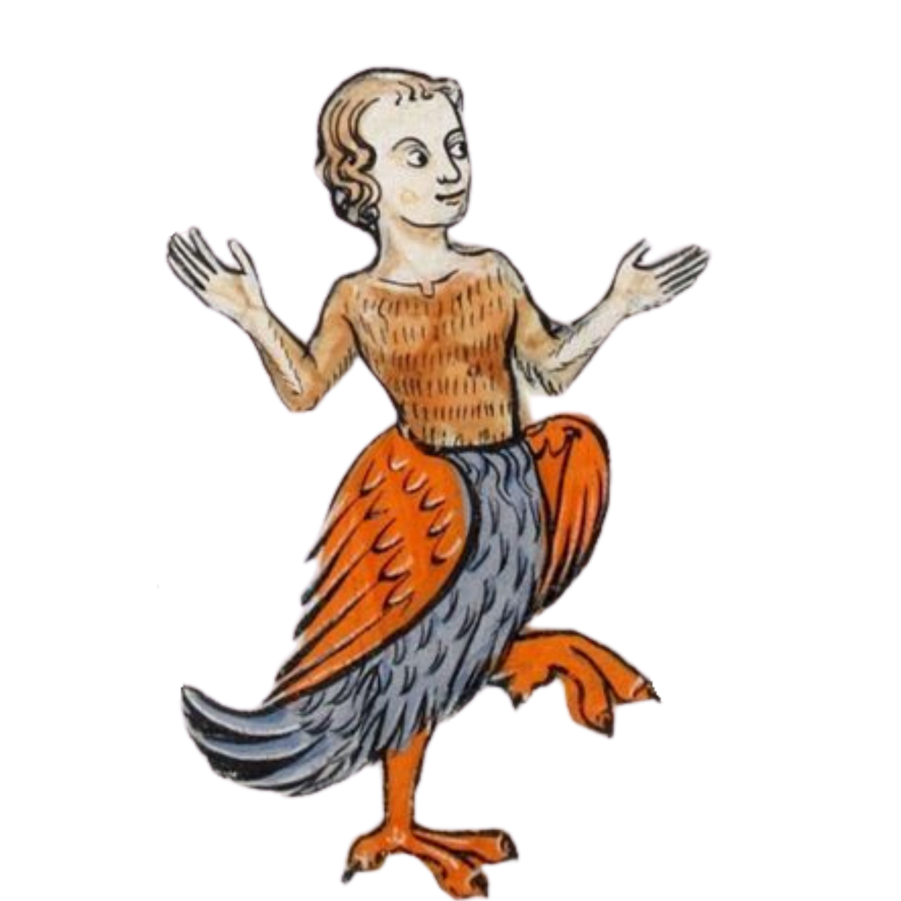

About
About

Hey, I'm Ali, a CS master's student at TUM. I'm into ML interpretability research, especially the low-level mechanistic stuff. The question that excites me most: how do deep learning models represent knowledge?
I also like building things. Right now I'm working part-time at Helmit on ML models for online child safety. At TUM, I did a research project at EML Munich (user models, belief extraction). Before TUM, I did research projects at hessian.AI (knowledge editing) and King's College London (AI safety), and studied CS at Marburg and philosophy at Saint Petersburg State University. In my free time I swim, read (mostly fiction and poetry), grow plants, and do jigsaw puzzles. I also have a thing for medieval bestiary art, which explains the creatures on this site.
P.S. I dropped some letters from my surname (Kholmovaia) in 2026 and now use the simplified version.
 Publications
Publications

Thoughts Links
Links